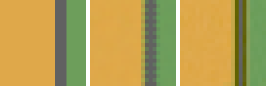
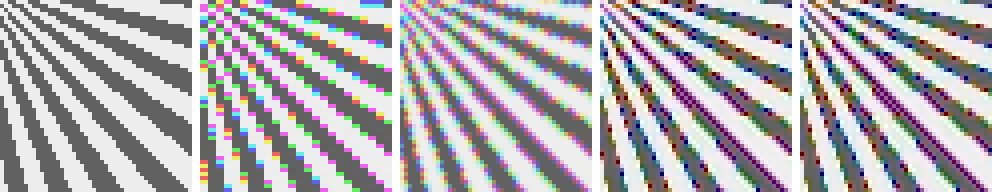

Every pixel in the balanced mosaic knows one third of its own color. Demosaicing invents the other two thirds — sixteen million educated guesses per photograph, made so routinely that most photographers don’t know a guess is happening at all. It is the most studied problem in the whole pipeline, the place where camera reviews are quietly won and lost, and the first stage where this book’s ground truth pays off in full: we will not argue about which algorithm is better, we will measure it.
One note on what “better” can even mean. A mosaic sampled red at one site in four; scene detail finer than that grid is not recorded ambiguously, it is not recorded at all, and no algorithm can conjure it back. Demosaicing is therefore not reconstruction in the strict sense — it is prediction from assumptions about images, and every method in this chapter is exactly one such assumption made mechanical. Better assumptions, better guesses; and near the center of the starburst, where the scene outruns the grid, everyone fails and the only question is how gracefully.
4.1The floor and the baseline
The simplest assumption: pixels are like their neighbors. Taken literally, it gives nearest — copy each missing value from the closest photosite of that color, no arithmetic at all. Each 2x2 cell then wears a single red and a single blue value whole, so the red image and the blue image are shifted copies of each other, and every edge becomes a small rainbow. The method exists in this book to be the floor, and to make a point: demosaicing artifacts are not exotic — they are what not thinking looks like, rendered visibly.
The same assumption, taken smoothly, gives the baseline every paper in the field measures against:
code/pxp/demosaic.pydef bilinear(mosaic):
"""Average the neighboring photosites of each color — the
baseline against which every demosaicing paper measures itself.
Smooth regions come out perfect; edges, which are the entire
problem, get averaged straight across."""
height, width = len(mosaic), len(mosaic[0])
out = Image(width, height, channels=3)
for y in range(height):
for x in range(width):
value = mosaic[y][x]
site = cfa_channel(x, y)
if site == 1:
green = value
else:
green = (_at(mosaic, x - 1, y) + _at(mosaic, x + 1, y)
+ _at(mosaic, x, y - 1)
+ _at(mosaic, x, y + 1)) / 4
red = value if site == 0 \
else _cross_average(mosaic, x, y, 0)
blue = value if site == 2 \
else _cross_average(mosaic, x, y, 2)
out.set(x, y, [red, green, blue])
return out
Averaging is kind to smooth regions — flat patches come out exact, as the test suite confirms — and unkind exactly where the image lives: at edges. Averaging across an edge invents values that belong to neither side, and it does so independently per channel, on grids that don’t even sample the same places. The signature artifacts follow directly:

Zippering — alternate-row disagreement along edges — and false color fringes are the two artifacts every demosaicing method since 1980 has been an attempt to suppress. Both are visible in the middle panel; both have the same root cause; and the cure for each begins with the same observation about real images.
4.2Interpolate differences, and defer decisions
The observation: in natural images, color changes far more slowly than brightness. Most edges are luminance edges — the red and green values both drop at the shadow line, together. So while red itself is jagged, red minus green is smooth almost everywhere, and smooth signals are what interpolation is actually good at. This suggests reconstructing the dense green channel first (Chapter 3’s gradient-directed interpolate_green, built on the same insight), then interpolating not red, but the red-minus-green difference, and letting it ride on the reconstructed green:
code/pxp/demosaic.pydef _rb_as_differences(mosaic, green):
"""Red and blue planes, interpolated as color differences.
The trick that separates good demosaics from bilinear: don't
interpolate red itself, interpolate red *minus green* — the
difference varies far more slowly than either channel alone,
because most edges are luminance edges that red and green cross
together. Ride the interpolated difference on the already-
reconstructed green plane and sharp edges survive in all three
channels."""
height, width = len(mosaic), len(mosaic[0])
def diff_at(x, y):
x = min(width - 1, max(0, x))
y = min(height - 1, max(0, y))
return mosaic[y][x] - green[y][x]
planes = []
for channel in (0, 2):
plane = []
for y in range(height):
row = []
for x in range(width):
site = cfa_channel(x, y)
if site == channel:
row.append(mosaic[y][x])
continue
if site == 1:
if (channel == 0) == (y % 2 == 0):
estimate = (diff_at(x - 1, y)
+ diff_at(x + 1, y)) / 2
else:
estimate = (diff_at(x, y - 1)
+ diff_at(x, y + 1)) / 2
else:
estimate = (diff_at(x - 1, y - 1)
+ diff_at(x + 1, y - 1)
+ diff_at(x - 1, y + 1)
+ diff_at(x + 1, y + 1)) / 4
row.append(green[y][x] + estimate)
plane.append(row)
planes.append(plane)
return planes
Green plus color differences is the gradient method, and to say how much it buys, the book needs its measuring stick for images: PSNR, peak signal-to-noise ratio — mean squared error against ground truth, flipped onto a logarithmic decibel scale so that higher is better and every three decibels means the error halved. On the torture target, gradient buys nearly five decibels over bilinear — the single largest step anywhere on this chapter’s ladder. Almost every serious demosaic since the mid-1990s, however elaborate, has this exact structure at its core: dense channel first, differences after.
What remains is the direction problem. interpolate_green decides horizontal-or-vertical from a local gradient — two subtractions — and near busy texture that decision is noisy; every wrong call plants a zipper tooth. AHD — Adaptive Homogeneity-Directed, Hirakawa and Parks, 2005 — reframes the problem with one elegant move: stop deciding early. Interpolate the entire image twice, once committed everywhere to horizontal and once to vertical, and then judge the finished candidates: at each pixel, keep the one whose neighborhood is more homogeneous — more neighbors within a tight luminance and chrominance tolerance. A wrong direction produces local color churn; homogeneity detects the churn without ever knowing the truth:
code/pxp/demosaic.pydef ahd(mosaic):
"""Adaptive Homogeneity-Directed demosaicing, from scratch.
Hirakawa & Parks (2005): interpolate the whole image twice —
once committed to horizontal, once to vertical — and at every
pixel keep the candidate whose neighborhood is more
*homogeneous*: more neighbors within an adaptive luminance and
chrominance tolerance. Direction mistakes show up as local
color/brightness churn, so homogeneity is a proxy for "which
guess was right" that needs no ground truth.
One disclosed deviation: the paper measures homogeneity in
CIELAB, but our pipeline has no colorimetric transform until
Chapter 5, so luminance and chrominance are proxied as
(R + 2G + B)/4 and the (R-G, B-G) difference pair. The mechanism
is unchanged. The paper's optional median-filter cleanup pass is
discussed, not implemented.
"""
height, width = len(mosaic), len(mosaic[0])
candidates = [] # [(red, green, blue), ...]
lum, chrom_a, chrom_b = [], [], []
for horizontal in (True, False):
green = _directional_green(mosaic, horizontal)
red, blue = _rb_as_differences(mosaic, green)
candidates.append((red, green, blue))
lum.append([[(red[y][x] + 2 * green[y][x] + blue[y][x]) / 4
for x in range(width)] for y in range(height)])
chrom_a.append([[red[y][x] - green[y][x]
for x in range(width)] for y in range(height)])
chrom_b.append([[blue[y][x] - green[y][x]
for x in range(width)] for y in range(height)])
def clamped(plane, x, y):
return plane[min(height - 1, max(0, y))][min(width - 1, max(0, x))]
# left, right, up, down — the order matters to the epsilons below
directions = ((-1, 0), (1, 0), (0, -1), (0, 1))
homogeneity = [[[0] * width for _ in range(height)],
[[0] * width for _ in range(height)]]
for y in range(height):
for x in range(width):
lum_diff = [[], []]
chrom_diff = [[], []]
for cand in (0, 1):
for dx, dy in directions:
lum_diff[cand].append(
abs(lum[cand][y][x]
- clamped(lum[cand], x + dx, y + dy)))
da = chrom_a[cand][y][x] \
- clamped(chrom_a[cand], x + dx, y + dy)
db = chrom_b[cand][y][x] \
- clamped(chrom_b[cand], x + dx, y + dy)
chrom_diff[cand].append(da * da + db * db)
# adaptive tolerances: as tight as the *easy* axis of
# each candidate — horizontal differences for the H
# image, vertical for the V — so flat regions demand
# near-agreement and busy regions get slack
eps_lum = min(max(lum_diff[0][0], lum_diff[0][1]),
max(lum_diff[1][2], lum_diff[1][3]))
eps_chrom = min(max(chrom_diff[0][0], chrom_diff[0][1]),
max(chrom_diff[1][2], chrom_diff[1][3]))
for cand in (0, 1):
score = 0
for k in range(4):
if (lum_diff[cand][k] <= eps_lum
and chrom_diff[cand][k] <= eps_chrom):
score += 1
homogeneity[cand][y][x] = score
out = Image(width, height, channels=3)
for y in range(height):
for x in range(width):
votes = [0, 0]
for cand in (0, 1): # 3x3 smoothing of the maps
for dy in (-1, 0, 1):
for dx in (-1, 0, 1):
votes[cand] += clamped(homogeneity[cand],
x + dx, y + dy)
if votes[0] > votes[1]:
chosen = [candidates[0][c][y][x] for c in range(3)]
elif votes[1] > votes[0]:
chosen = [candidates[1][c][y][x] for c in range(3)]
else:
chosen = [(candidates[0][c][y][x]
+ candidates[1][c][y][x]) / 2
for c in range(3)]
out.set(x, y, chosen)
return out
Patent note
AHD is published academic work, implemented for two decades in open-source raw processors (dcraw, RawTherapee, LibRaw). It is safe to implement, explain, and build on. What is not being reimplemented here — in this chapter or anywhere in this book — is any camera manufacturer’s actual in-camera demosaicing, which is proprietary and in some cases patented. This book’s results will visibly differ from any specific manufacturer’s rendering, and that is by design.
The ladder, measured over the full starburst frame against ground truth:
| Method | PSNR | What the number hides |
|---|---|---|
| nearest | 12.55 dB | rainbows on every edge |
| bilinear | 15.56 dB | zipper and fringe, softness |
| gradient | 20.25 dB | occasional wrong directions |
| AHD | 21.44 dB | thin-feature tinting |

Read the table with the three-decibel exchange rate and gradient over bilinear is an error cut of two-thirds, bought with one insight and a page of code. AHD’s further 1.2 dB is the polish: fewer wrong directions, straighter edges, at triple the arithmetic. (The paper’s final step — a few passes of median filtering on the color differences — buys a little more and is omitted here, disclosed and discussed rather than implemented; dcraw ships it if you want to see it work.) All four methods exist in pxp.fast as bit-identical twins, and AHD is the reason the fast tier exists at all: the reference implementation builds two complete candidate images and judges every pixel of both, which at 24 megapixels is a coffee break per frame in pure Python.
4.3The wider field, on paper
Everything above interpolates in the spatial domain. There is a second way to see the problem entirely, worth knowing even without implementing: in the frequency domain, a Bayer mosaic is a full-color image whose luminance sits at baseband and whose chrominance has been modulated up to the corners of the spectrum — the CFA acts as a carrier system, and demosaicing becomes filter design for separating the bands (Alleysson, Süsstrunk & Hérault 2005; Dubois 2005). False color, in this view, is literally crosstalk between channels sharing a band. The insight explains artifacts that spatial reasoning only names, and it produced a family of fast, principled linear methods.
The modern frontier treats demosaicing as learning rather than design: train a network on mosaiced/truth pairs, often jointly with denoising, since Chapter 2’s noise and this chapter’s interpolation interact badly when handled separately (Gharbi et al. 2016 is the standard reference; every phone in your pocket now runs a descendant). The trade is the usual one — better averages, opaque failures, and a training-set prior in place of an explicit assumption. This book stays with explicit assumptions; the survey is here so you know what the production world does, and where to read further.
4.4X-Trans, briefly
Fuji’s X-Trans sensors replace Bayer’s 2x2 with a 6x6 arrangement — still half green, but pseudo-irregular, every row and column containing all three colors. The rationale runs straight through this chapter’s figures: a regular sampling grid turns fine regular detail into clean, confident, wrong patterns (moiré — our starburst centers are full of it), and irregularity trades that structured failure for unstructured, noise-like failure that eyes forgive and that lets the camera drop its optical low-pass filter. The cost lands on this chapter’s algorithms: neighborhoods vary cell by cell, “the same-color neighbor two steps away” stops being a constant, and everything from the bilinear stencils to AHD’s candidate machinery must be rebuilt per-position. Open implementations exist and are excellent reading (Markesteijn’s algorithm in RawTherapee is the reference point); Fuji’s own in-camera processing is proprietary, and neither is reimplemented here — the concepts transfer, the stencils don’t.
The mosaic is an image now: three channels everywhere, edges straight where care was taken, and a measured account of what the guessing cost. But it is an image in camera RGB — the sensor’s private, non-colorimetric idea of color, displayed so far only under deliberate mislabeling. Chapter 5 ends the mislabeling: what a color space actually is, why camera RGB isn’t one, and the matrix — derived from our own spectral ground truth — that carries the image into a space where “red” finally means red.